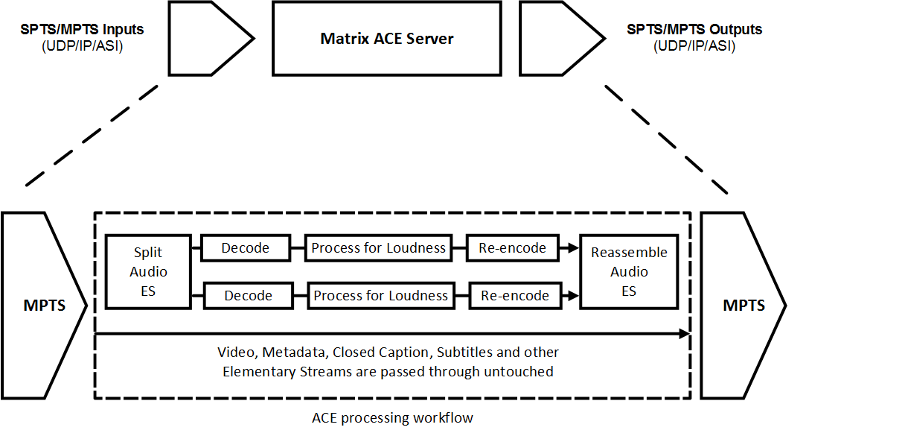

Architecture
Ethernet (UDP/IP) and ASI input/output
The Matrix ACE software is installed onto server hardware with Ethernet and/or ASI card adaptors installed to provide input and output interfaces for the Transport Streams to be processed.

Audio elementary stream loudness processing
Matrix ACE accepts a Single Program Transport Stream (SPTS) or Multiple Program Transport Stream (MPTS) as input, which then has each of its audio Elementary Streams split out by the Mediaware Transport Stream processing engine for processing by the loudness processor.
The audio elementary streams are decoded, processed to match the configured loudness profile and re-encoded. The re-encoded audio elementary streams are then packetized and the packets are written into the exact byte positions in the output transport stream as the input packets had.
Non-audio elementary streams pass-through untouched
All non-audio elementary streams pass through untouched and without loss, and audio elementary streams are processed to conform to the configured loudness profiles without loss in quality.
Multiple Programs (channels) within the transport stream can have their audio elementary streams processed for loudness simultaneously. Hardware specifications are the factor which limits the number of programs (channels) that can be processed by each server.